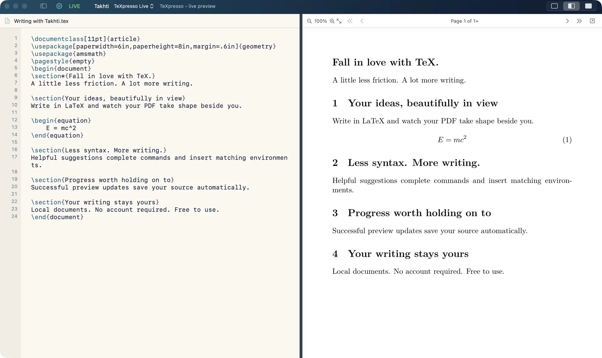
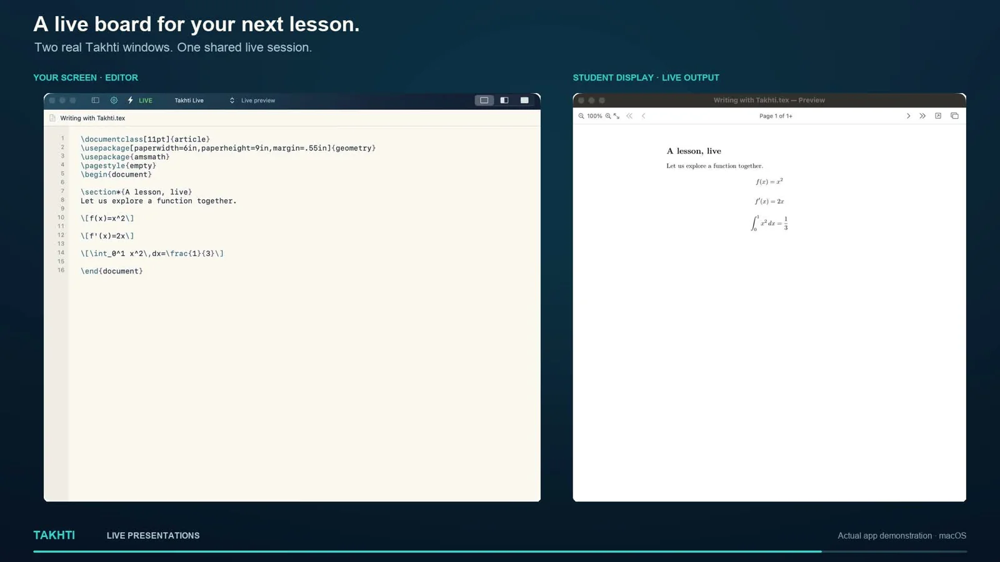
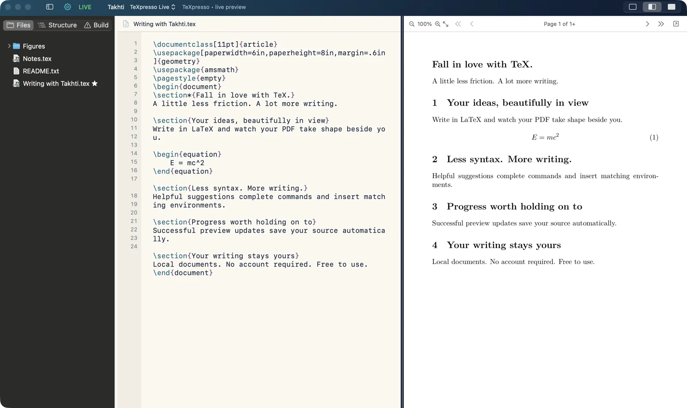
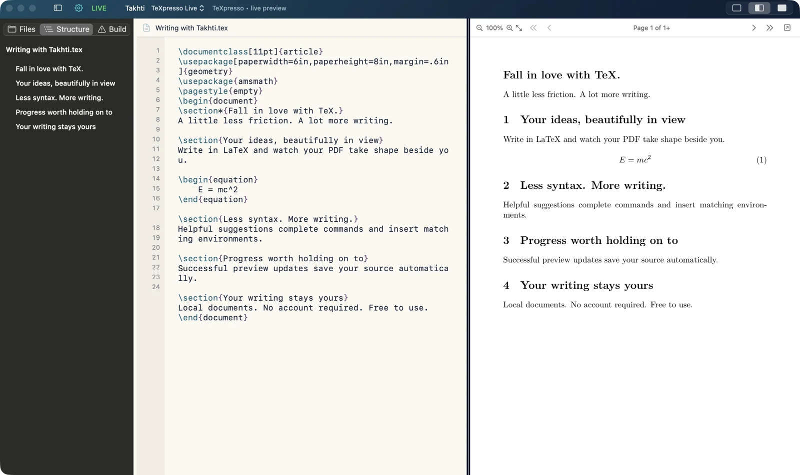

Live LaTeX preview.
Takhti Live brings incremental PDF updates beside your source. Stay with your ideas instead of reaching for Compile.
INTRODUCING TAKHTI
Fall in love with TeX.
Takhti is a free, modern desktop LaTeX editor for research papers, equations, theses and lecture notes. Write locally and see your PDF update as you type.
Free to use · No account required · macOS, Ubuntu & Windows through WSL
See Takhti in action
Takhti Live brings incremental PDF updates beside your source. Stay with your ideas instead of reaching for Compile.
Command suggestions, paired environments and clear error highlights help you keep moving through LaTeX.
Local editing and compilation. No manuscript upload or Takhti account. Write offline after setup.
A BIGGER STAGE FOR YOUR IDEAS
Pop the live PDF preview into a separate window and move it to a second display or classroom projector. Keep your LaTeX source on your own screen while students follow the equations as you write.

Two real Takhti windows shown side by side to illustrate the teacher and student displays. Close the preview window to bring it back into the editor.
ROOM TO THINK
Navigate a whole paper, find a figure, or jump to a section.
The tools are close. Your writing stays at the center.


SEE TAKHTI IN ACTION
A real writing session: live PDF output, suggestions, error recovery, autosave, and a pop-out preview for lessons and presentations.
3 min 14 sec · Actual Mac app · Music and on-screen captions · Download the video ↗
YOUR NEXT PAGE STARTS HERE
Download Takhti, the free LaTeX editor with live PDF preview, for macOS, Ubuntu Linux or Windows through WSL.
Version 0.9.25 · Beta
4.2 MB · Apple silicon · macOS 11+
Open the DMG and drag Takhti into Applications.
Setup downloads the verified prebuilt live runtime (about 66 MB), then reuses an existing full MacTeX installation or downloads MacTeX (about 6.4 GB) if missing. Progress is shown in Takhti; interrupted MacTeX downloads can resume after a restart. macOS Installer asks for administrator approval. Installed packages are reused before fetching uncached compatible inputs. This beta is locally signed and has not been Apple-notarized.
Version 0.9.25 · Beta
130.6 MB · Ubuntu 22.04+ · AMD64
Download the .deb, then install it with your package installer.
First-run setup prepares Takhti Live and checks for TeX Live. If missing, full TeX Live is downloaded and installed (several GB), with progress and package details shown in setup. Downloaded and partial TeX Live packages are retained so setup can continue after an interruption. Administrator approval and internet access are needed. This is a test build; installation and runtime validation on Ubuntu are still pending.
Version 0.9.25 · Beta
131.0 MB · Intel/AMD 64-bit · Windows 11 or Windows 10 build 19044+
Run the installer, then follow the guided WSL setup.
Runs the Ubuntu app through WSL 2 and WSLg. Setup checks for WSL and asks before installing missing components; a restart may be required. Setup also reuses existing TeX Live or installs the full distribution when missing. A fresh setup can download several GB, with progress shown in the setup window. Windows ARM is not supported. Unsigned test build; testing on a real Windows machine is still pending.
THE DETAILS, WHEN YOU NEED THEM
Takhti combines incremental live PDF preview, LaTeX command suggestions, project navigation and a pop-out display in a focused desktop workspace. It is free to use. macOS runs as a native Mac app; Ubuntu has a Linux app; Windows runs the Ubuntu version through WSL. Try it with your own project to see whether it suits your workflow.
Yes. Open Find/Replace from the editor header, or press ⌘F on Mac and Ctrl+F on Ubuntu or Windows. You can navigate matches, replace one match or replace all, and undo replacements.
Setup checks for a full TeX installation. On Mac, it first downloads the prebuilt Takhti Live runtime (about 66 MB), then downloads MacTeX (about 6.4 GB) if no full MacTeX installation is present. Ubuntu and Windows/WSL reuse TeX Live or install the full distribution when missing. Progress and download details are displayed during setup. Standard builds try pdfLaTeX, then XeLaTeX, then LuaLaTeX. Private or nonstandard packages may still need to be supplied with your project.
Save an untitled document once to choose its location. In Takhti Live mode, a successful live-preview update saves that source revision; only the pages needed for the preview may have been checked. Later pages can still contain errors. Timed and manual builds autosave on a successful full build. Use ⌘S on Mac or Ctrl+S on Ubuntu and Windows whenever you want to save the current text explicitly.
A full build saves the PDF alongside the project’s root .tex file. When closing builds are enabled and a document has a successful live-preview update and no current live-build failure, Takhti attempts a full build using the last successful source checkpoint. Settings lets you turn the closing build off and choose its compiler. If that build fails, the existing PDF is preserved and a brief dialog lets you close anyway or cancel.
Takhti’s editing and compilation run locally. It does not upload your documents for typesetting and does not require a Takhti account. Dependency setup, missing-package downloads and release checks contact external services. Update checks run automatically only after more than three days since the last successful check, and whenever About opens. This website and GitHub downloads are separate services with their own privacy policies.
Yes. Takhti is free to use, with no subscription required.
Downloads are available above for Ubuntu and Windows. Both include Takhti Live; Windows runs the Ubuntu app through WSL 2 and WSLg, with a guided setup and a normal desktop shortcut. These are beta test builds awaiting validation on their target operating systems.
Open the DMG and drag Takhti into Applications. First-run setup checks for Takhti Live and a full TeX distribution, then offers to install missing components. Requires Apple silicon and macOS 11 or later.
Install the AMD64 DEB with your package manager, or run sudo apt install ./Takhti-0.9.25-Ubuntu-amd64.deb. Requires Ubuntu 22.04 or later on Intel/AMD 64-bit.
Run the x64 Windows installer and follow the guided WSL 2/WSLg setup. Administrator approval and a restart may be required. Windows ARM is not supported.
The installers are beta releases. The Mac app is not Apple-notarized; Windows is unsigned. Linux and Windows require broader testing.
Install Takhti and complete the guided setup. Start with an article template, save your document as a .tex file, then select Takhti Live in the build-mode menu. Edit the text between \begin{document} and \end{document} to see the preview update.
For a heading, type \section{} and write its title inside the braces. For a displayed equation, insert an equation environment and enter E=mc^2 between its matching begin and end commands. Suggestions help complete LaTeX commands and environments.
Use Find and Replace with Cmd+F on Mac or Ctrl+F on Ubuntu and Windows. If a line has an error, check its highlight and the Build sidebar. A successful live update checks the previewed content; use a full build before sharing the final PDF.
Watch the real editing demonstration or download Takhti for your computer.
Yes. Open the project’s main LaTeX source file with its supporting files and figures in place. Use the project browser to find files and the document outline to navigate sections. Templates provide starting points for common document types, including presentations. Compatibility depends on the packages and features used by your project.
Open the preview in a separate window using the pop-out button in the preview header. Move that window onto your second display or projector. Keep the editor on your own screen and type inside a complete LaTeX equation environment so students can follow the output as it changes. See the teaching preview example.
| Feature | Takhti | Overleaf | TeXstudio | VS Code + Extensions |
|---|---|---|---|---|
| Interface Design | 💎 Modern & Minimal | 💻 Cloud-heavy | 🏛️ Outdated / Cluttered | 🛠️ Complex Setup |
| Offline Reliability | ✅ 100% Native | ❌ Requires Internet | ✅ Native | ✅ Native |
| Preview speed | ⚡ Instant | ⌛ Dependent on browser | ⌛ Moderate | ⌛ Heavy Load |
| Learning Curve | 🌱 Easy | 🌱 Easy | 🪵 Steep | 🪵 Complex for beginners |
HELP TAKHTI GROW
Takhti is free to use. If it makes your writing more enjoyable, you can support its development on Patreon from US$3 per month. Your optional contribution helps fund improvements, bug fixes, cross-platform testing and tutorials.
A voluntary monthly membership. No contribution is required to download or use Takhti.